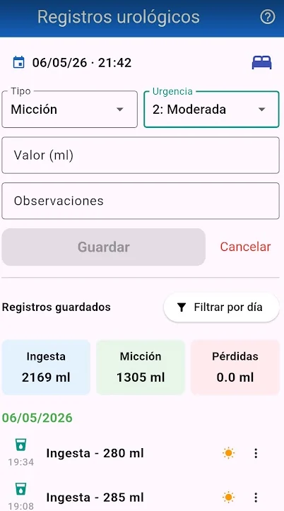
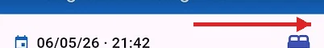
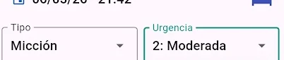
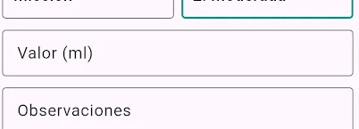
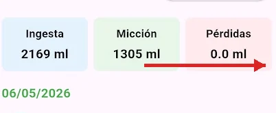

Recipient de mesura
Utilitza un recipient graduat. Un de 250 ml acostuma a ser suficient, encara que a vegades calgui omplir-lo dues vegades.
Mòdul Uro
Guia pràctica per registrar ingestes, miccions, pèrdues i escapes.


Pots modificar el dia o l’hora per afegir registres passats. Si prems el requadre de data i hora, pots tornar al moment actual.
Si a les 3 de la matinada estàs de peu, registra amb el sol. Si estàs al llit, registra amb la icona de llit.

En seleccionar el tipus de registre apareixen opcions específiques: urgència en micció, tipus d’absorbent en pèrdues o situació de l’escape.

Introdueix els valors en ml. En pèrdues es poden introduir decimals i el valor 0 és vàlid quan no hi ha hagut pèrdues durant aquell període.
Quan el valor és correcte, el botó de guardar s’activa.

Per editar o eliminar un registre, prem els tres punts de la dreta i selecciona l’opció corresponent.
Utilitza un recipient graduat. Un de 250 ml acostuma a ser suficient, encara que a vegades calgui omplir-lo dues vegades.
Els primers dies és útil una bàscula petita d’1 kg per mesurar gots, tasses o recipients habituals.
Per donar una informació correcta al metge, és convenient registrar com a mínim el canvi d’absorbent en aixecar-se i tots els canvis necessaris durant el dia.
Quan hi hagi una pèrdua o escape, anota si s’ha produït tossint, caminant, rient, fent esforç o per urgència.